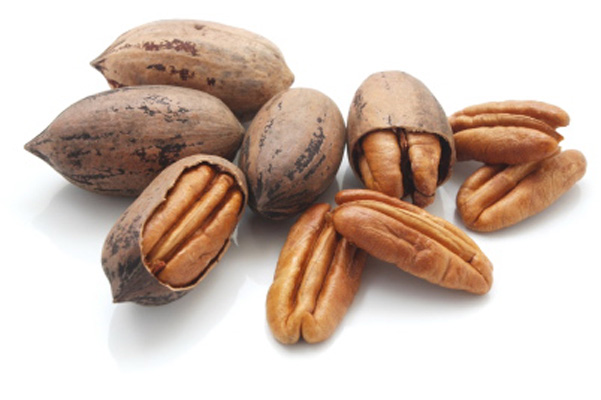

피칸(PECAN)
미국과 멕시코에서 주로 재배되는 가래나무과에 속하는 식물인 피칸나무의 열매이다. 이름의 유래는 알곤킨어로 돌로 깨는 과일이란 뜻의 '파칸'이다.맛과 모양은 같은 가래나무과인 호두의 일종인데, 호두에 비해 맛이 더 달고 향도 더 좋다. 호두는 먹고 나면 떫은 맛이 조금 남지만, 피칸에서는 떫은 맛을 느끼기 힘들다. 식감도 부드러워서 호두보다 잘 씹힌다.
색감과 모양을 비교하자면, 호두보다는 색이 어두운 편이고, 모양은 얇고 길쭉하다. 알맹이를 감싸고 있는 껍데기가 호두보다 얇다. 따라서 호두보다 씹어먹기가 부담없는 편이다. 대신 같은 무게의 호두보다 가격이 비싼 것이 흠이다. 피칸의 대부분은 수입산인데 호두에 비해서 배는 더 비싸다.

(피칸 이미지)
(피칸 이미지)
피칸의 효능
비타민 E와 섬유소질이 풍부하고, 단백질 함량이 높으며, 불포화지방산도 포함하고 있다. 여러 영양분을 고려했을 때, 동맥경화증을 포함한 각종 혈관질환, 심장질환, 암 예방에 효과가 있다. 또한 신경을 안정시키는 칼슘과 신경비타민인 비타민 B군의 함량이 높아 두뇌 발달에도 좋다고 알려져 있다.문제는 칼로리가 높다는 것. 100g당 670~690kcal로 버터와 비슷한 수준이라서, 칼로리를 걱정하는 사람은 과다 섭취를 하면 안 된다.